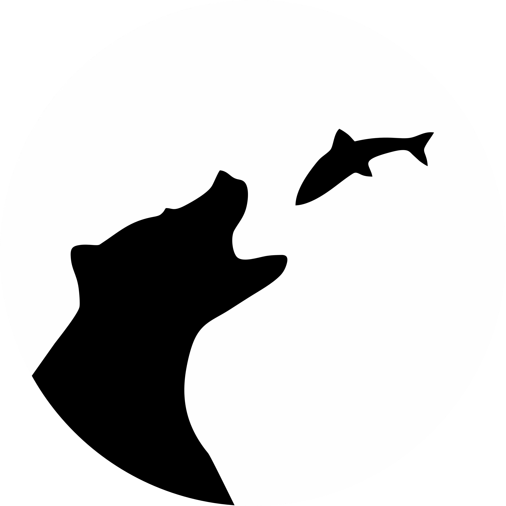
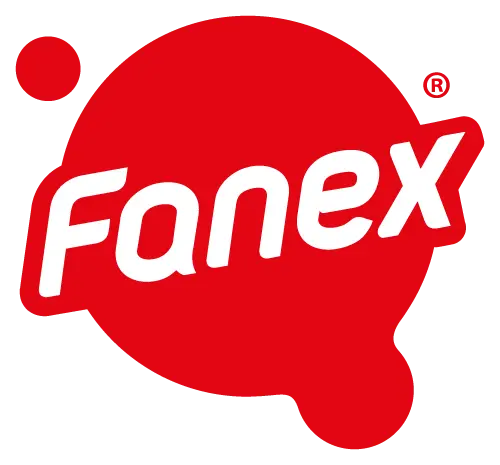
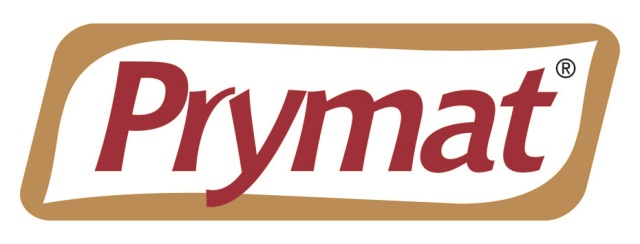

POMYSŁ I PRZYGOTOWANIE
Koncepcja, scenariusz, lokacje i casting. Ustalamy, co ma powstać, zanim włączymy kamerę.

BIG BEAR FILMMacie produkt, miejsce albo historię.
My wiemy, jak zrobić z tego film.
WYBRANE MARKI
z naszych realizacji


01 / CO MOŻEMY DLA WAS ZROBIĆ
Jeden spot, film o firmie czy cała seria?
Dobieramy formę do tego, co chcecie pokazać i gdzie chcecie dotrzeć.
Nie musicie mieć gotowego scenariusza. Wystarczy wiedzieć, co chcecie pokazać. Resztę wypracujemy razem.
Zacznijmy od rozmowy02 / ZOBACZCIE TO W PRAKTYCE
Różne marki. Różne potrzeby.
Wybierzcie kategorię i obejrzyjcie filmy.
03 / JEDNA EKIPA. CAŁA PRODUKCJA.
Od lekkiej realizacji w Waszej firmie po plan z aktorami i scenografią. Skład ekipy i środki dobieramy do pomysłu.
Koncepcja, scenariusz, lokacje i casting. Ustalamy, co ma powstać, zanim włączymy kamerę.
Obraz, światło, dźwięk, charakteryzacja i scenografia. Koordynujemy ludzi i pracę na planie.
Montaż, kolor, udźwiękowienie i animacje. Film, skróty, piony i poziomy do ustalonych kanałów.
Potrafimy połączyć
jakość ze skalą.
Volkswagen / Škoda
Współpraca z DRUM Poland
Hungarian Wine
Plan przygotowany w 7 dni
Silent Night / dokument dla TVN
Koordynacja, ekipa i zaplecze produkcji
04 / WSPÓŁPRACA BEZ NIEDOMÓWIEŃ
Nie trzeba znać się na produkcji filmowej.
Przeprowadzimy Was przez nią krok po kroku.
Co chcecie pokazać, komu i gdzie? Ustalamy materiały, termin i budżet. Na tej podstawie przygotowujemy propozycję i wycenę.
W produkcji scenariuszowej najpierw poznajecie koncepcję i scenariusz. Przy relacji z wydarzenia ustalamy plan i najważniejsze momenty.
Organizujemy ekipę i prowadzimy zdjęcia. Jeśli występujecie przed kamerą, pomagamy odnaleźć się na planie i powiedzieć to po swojemu.
Otrzymujecie montaż do uwag, a po uzgodnionych poprawkach gotowe pliki. Długości, proporcje i wersje ustalamy na początku współpracy.
TERAZ WASZ RUCH
Opowiedzcie nam o swojej firmie.
Wspólnie ustalimy, jaki film ma sens.
Jaki film chodzi Wam po głowie?
Porozmawiajmy o pomyśle, terminie i możliwościach realizacji.
„Bardzo konkretna współpraca, jasne procesy i niezwykle szybka realizacja!”
Daria Pieczka-Brzezińska